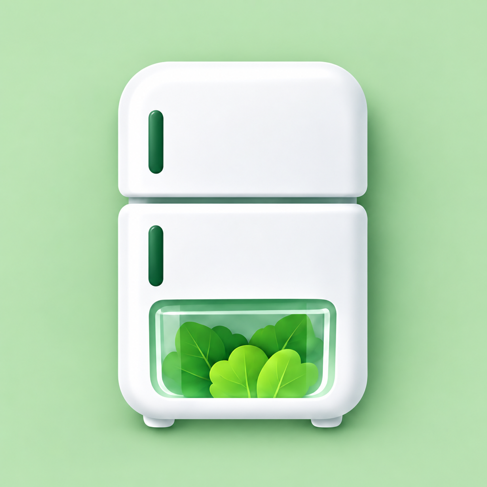

A little less waste. A little more order.
Know your food.
Enjoy it in time.
Food Inventory & Expiry Dates
Scan Receipts, Track Spending
Keep your pantry, fridge and freezer in view. Organize groceries, keep an eye on expiry dates and plan your next shopping trip.
View on the App Store ↗
01 / ORGANIZE
A place for every grocery.
Track food, quantities and storage locations in one inventory.
02 / REMEMBER
Use what you have.
Review expiry dates and enable reminders to help plan ahead.
03 / PLAN
Shop with a clearer list.
Scan receipts, review recognized items and keep track of grocery spending.